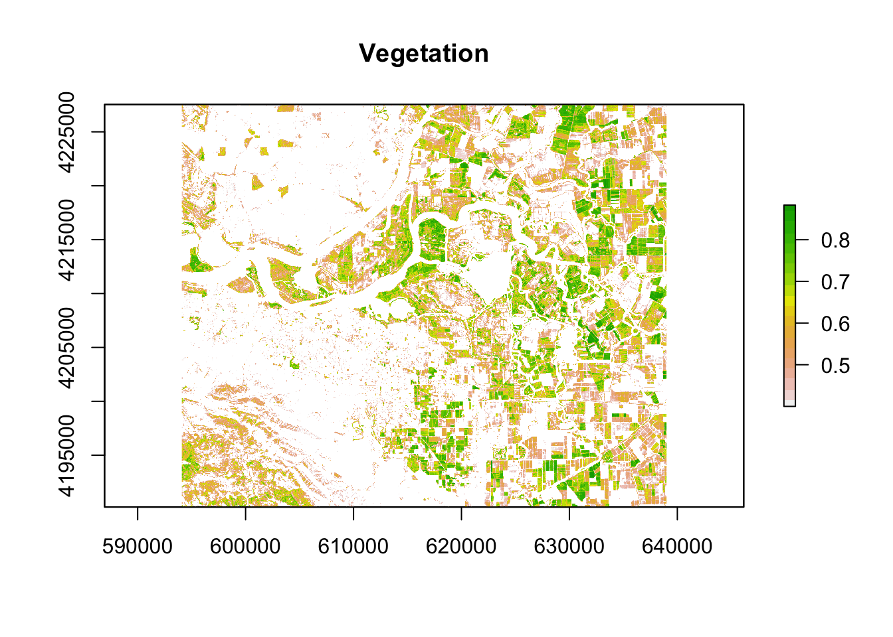
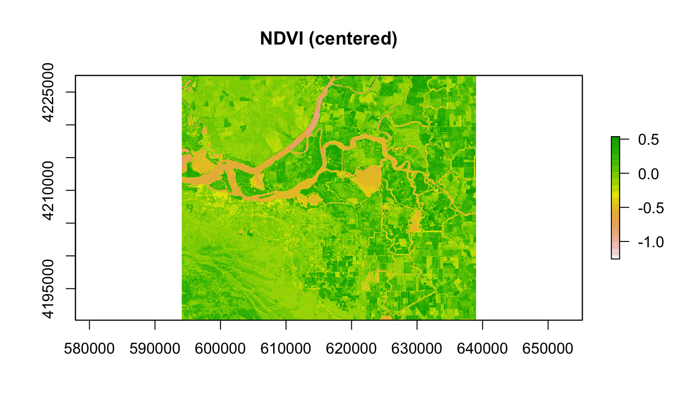
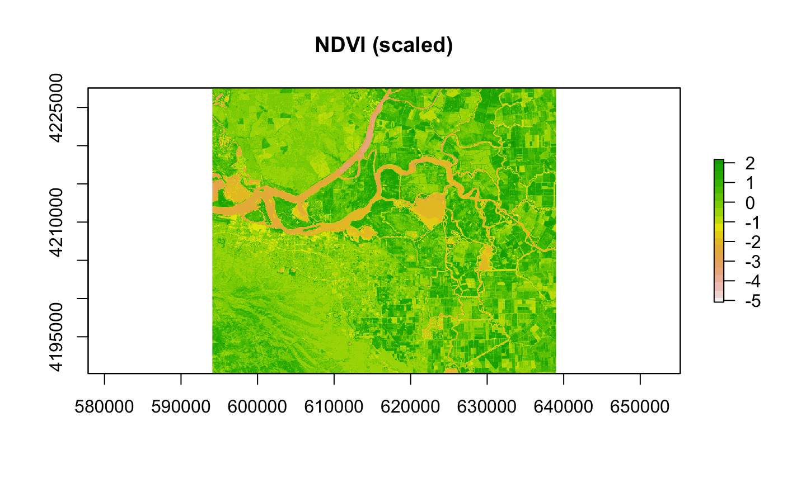
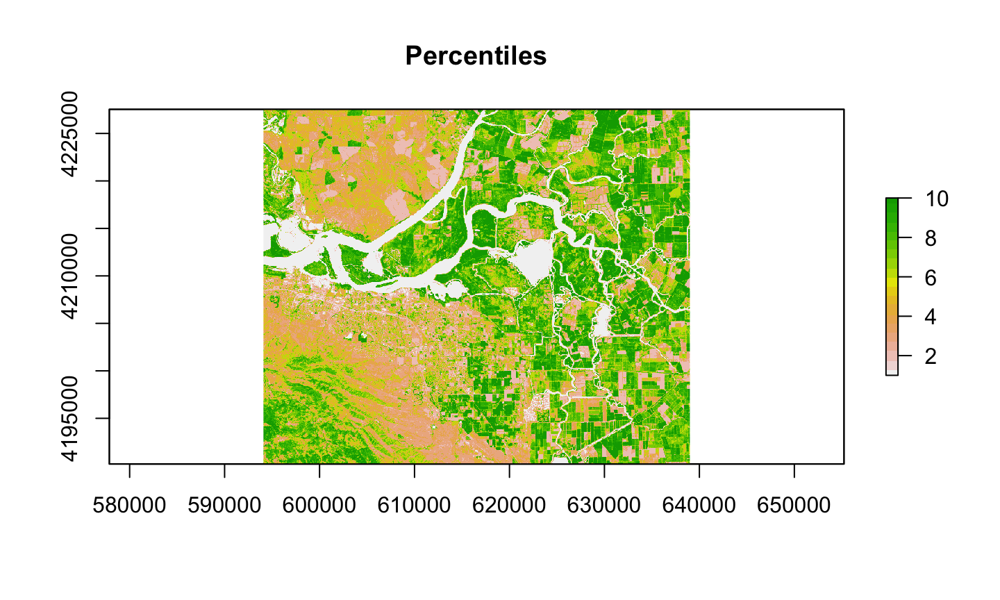

Explore basic raster operations (raster math, moving window analysis)
Learn workflow for raster reclassification
Learn basic approach for merging neighboring rasters
2/17/2020
Learning Objectives
A bit of remote sensing
Deriving vegetation indices largely a function of calculating the right ratios.
Rtreatsrastersas large matrices making math pretty easy
Slide with R Output
if(!file.exists('data/rs/samples.rds')) {
download.file('https://biogeo.ucdavis.edu/data/rspatial/rsdata.zip', dest = 'data/rsdata.zip')
unzip('data/rsdata.zip', exdir='data')}
Load an image
## [1] TRUE
## [1] TRUE
Plot the image

Calculate Normalized Difference Vegetation Index
NDVI is a commonly used expression of “greenness” used to characterize productivity
Operationally just a series of cell-wise arithmetic

Raster math continued
More complex operations possible
rescaling data

Manual Scaling

Using scale in raster
rasterpackage recreates a number of generic functions forRasterobjects
Reclassifying rasters
Useful for converting continuous rasters into categorical (or ordinal) data
Thresholding based on a minimum value

Reclassifying (cont’d)
- Based on percentiles in the data 